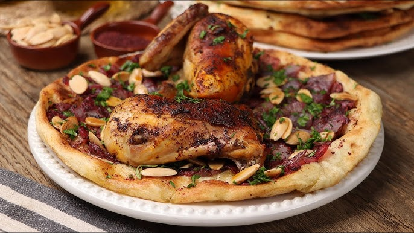

Musakhan

Description
musakhan is one of the most famous dishes in Palestinian cuisine.
It is prepared with chicken, delicious taboon bread, and onions.
What distinguishes it is the red sumac spice, which gives it a distinctive and delicious taste.
ingredients
- Onions: 2 kg (chopped)
- Chicken, cut into pieces and boiled
- Olive oil: 3 cups
- Salt: 2 tablespoons
- Sumac: ½ cup
- Black pepper: 1 tablespoon
- Taboon bread
- Almonds: as desired and roasted pine nuts for garnish
Preparation Method
- Boil the chicken in the traditional way, adding bay leaves, cardamom, cloves, an onion, and salt.
- Heat oil in a pot, then add the onions and cook over low heat for 20 minutes until cooked through. Then add salt and black pepper.
- Add the chicken to the onions and cook for 5 minutes.
- Place the chicken on a baking tray, season with salt, black pepper, and spices, and grill in the oven until golden brown.
- Prepare taboon bread, dip it in onion oil, and arrange it on a serving plate. Add the onions to the bread dipped in oil, then add sumac and nuts.
Repeat the process until all the bread layers are finished.
- Add the chicken on top of the last layer of bread and garnish with nuts.
Home